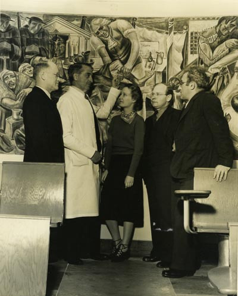
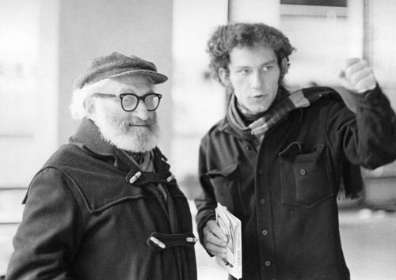
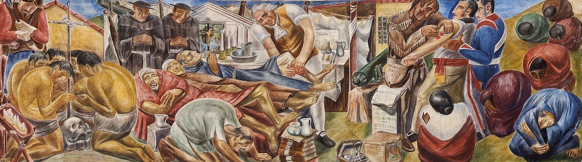
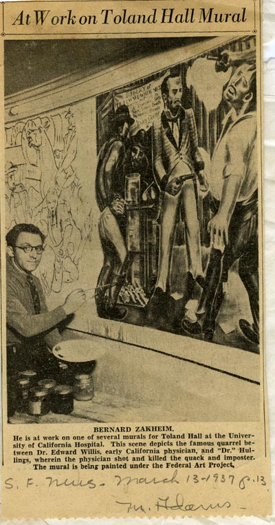
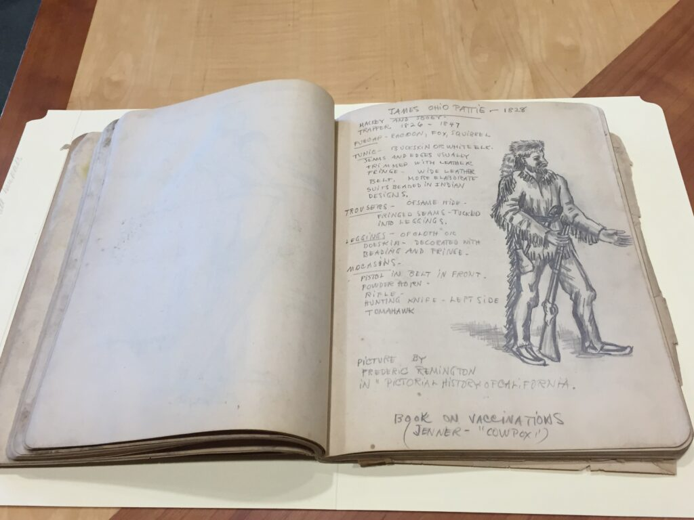

Ever since the Polish-born artist Bernard Zakheim painted a series of murals at UCSF in 1930s they remain the jewel of the University’s Art Collection. These murals include ten panel series in Toland Hall, “History of Medicine in California,” and two panels originally located in the Cole Hall and later moved to the Health Sciences West (HSW) lecture halls – “Modern Medicine” and “Ancient Medicine: Superstition in Medicine.” Zakheim worked with Diego Rivera in Mexico City and is best known for contributing the Library Periodical Room fresco and helping organize the New Deal art project at the Coit Tower in San Francisco. From the time of their unveiling, the archives has been compiling reference materials about these murals and now we are delighted to report that a comprehensive set of materials documenting how these frescoes were created and preserved was donated to UCSF (Bernard Zakheim collection, MSS 2014-15).
Viewing murals at Toland Hall at UCSF, left to right: F. Stanley Durie, Superintendent of UC Hospital, Dr. William E. Carter, Phyllis Wrightson, Joseph Allen, State Director of WPA Federal Art Project, Bernard Zakehim (ca. 1939)
Last year I had the privilege to meet one of the sons of the artist who also helped restore the frescoes in 1970s when the wallpaper covering them for almost two decades was removed and the two panels were relocated from the original Cole Hall to HSW.
Artist Bernard Zakheim with his son Nathan Zakheim (1967)
One of the biggest archives’ advocates, Dr. Robert Sherins (SOM, 1963) introduced me to Nathan Zakheim. Nathan, a talented art conservator based in Los Angeles, is the keeper of his father’s extensive archives and art collection. Last fall we met at his warehouse to review and pack the documents destined for UCSF.
The idea to commission murals was brought by Dr. Isabella Perry, professor of pathology after seeing the frescoes Zakheim painted at the Alemany Public Health Center and then spearheaded by Chauncey D. Leake, professor of pharmacology and medical historian. The university murals undertaking which was partially funded by the WPA Federal Art Project and also sponsored by the university was a true collaborative effort between Zakheim’s team and UCSF faculty (including renowned UCSF doctors, Chauncey D. Leake, George Lyman, Langley Porter, Salvatore P. Lucia, W. E. Carter, and F. W Lynch). The artist was provided unrestricted access to the Crummer Room containing numerous books on the history of medicine, including recently published “California’s Medical Story” by Dr. Henry Harris. Zakheim’s assistant, Phyllis Wrightson did extensive research about California medical history which becomes apparent in the sketchbook that she kept for the project. The instruments depicted by her on these pages are still preserved at the archives’ artifact collection and will be displayed as part of the 150th anniversary exhibit.

Drawings of surgical instruments from the UCSF collection for the panel devoted to Don Pedro Prat, surgeon of the Portolá expedition.
Surgeon Don Pedro Prat treats patient’s leg, James Ohio Pattie vaccinates Californians.
One of the sketches portrays fur trader James Ohio Pattie who was captured for illegal trapping in California and earned his release from Mexican imprisonment in San Diego by using the smallpox vaccine to curtail the epidemic spreading among Californians (that story based on the Pattie’s “Personal Narrative” was later proved to be inaccurate as it was measles epidemic* that occurred in Alta California at that time).
Bernard Zakheim at work, 1937
Drawing of James Ohio Pattie.
Bernard Zakheim and his team interviewed numerous faculty members who are depicted in the panel “Rational Medicine,” including Robert Stone, professor of radiology, Francis S. Smith, pediatrician and dean of the School of Medicine, Karl F. Meyer, director of the Hooper Foundation, anesthesiologist Arthur Guedel and Isabella Perry to name just a few.
Scaffoldings in the original Cole Hall (that was located at the School of Medicine building) set up while Bernard Zakheim was working on the panel “Rational Medicine.”
We are grateful to the Zakheim family and in particular to Nathan Zakheim for donating this unique collection to the University. It will be organized and described in the next few months, selected slides and documents will be digitized and uploaded to the library website.
Are you interested in viewing the murals, but unable to visit San Francisco? Please check these two video recordings from the UCSF archives:
Dr. Robert Schindler (Chair emeritus of the UCSF Department of Otolaryngology) presents a video tour of the murals painted by Bernard Zakheim in Toland Hall at UCSF, 1996: https://archive.org/details/cum_00001
Toland Hall murals tour by Dr. Chauncey Leake, 1976: https://archive.org/details/cum_000015
We would also like to bring to your attention a manuscript put together by Dr. Sherins chronicling the life story and work of Bernard Zakheim that can be accessed on the Alumni Association website.
* Valle, Rosemary K. “James Ohio Pattie and the 1827-1828 Alta California Measles Epidemic.” California Historical Quarterly, Vol. 52, No. 1 (Spring, 1973), pp. 28-36, http://www.jstor.org/stable/25157415.


{kind=link}
{kind=link}
{kind=link}
{kind=link}
{kind=link}
{kind=link}
{kind=link}
{kind=link}
{kind=link}